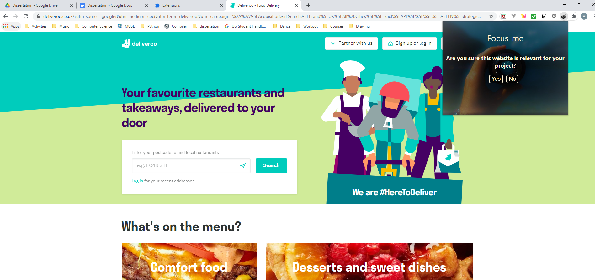
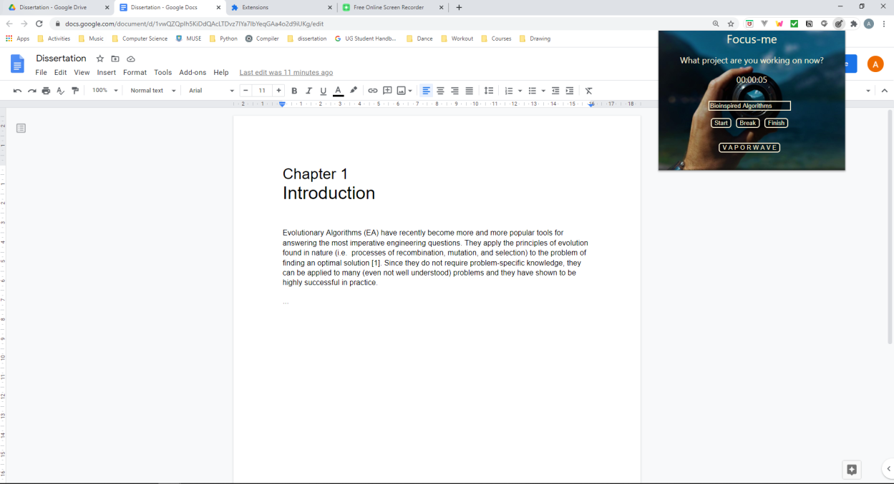
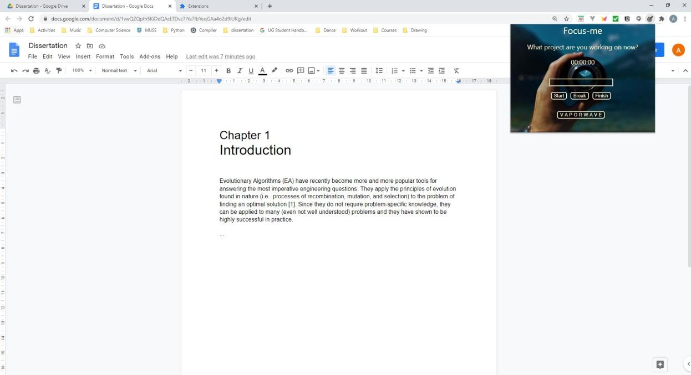

INSPIRATION
The internet is full of different temptation to distract us from what we should do.
You may start with a google document for your assignment and ended up with cat videos two hours later.
Sounds familiar? The internet today is full of distractions and that is why we came up with focus me to help people to focus on their work.
WHAT IS DOES?
The extension will have warning pops up when you are on a website that is irrelevant to your project.
HOW IT WORKS?
You start by typing in a project name in the extension and after you press the start button, our extension will do some background operation to detect whether the website you are surfing is relevant to the project. If it is relevant, nothing happen.
But if it is irrelevant, a warning pops up. You can decide if the website is relevant or not. If it is irrelevant, a stopwatch will start and all the time you spent on a irrelevant internet rabbit hole will be visible during the time you are on an irrelevant website.
SECURITY CONCERN
All data is saved on the user's chrome browser. No data is saved on our side and no data transmission between user and a server.
COOL SCREENSHOTS (IT'S OUR WEBSITE, WE CAN BRAG)
  